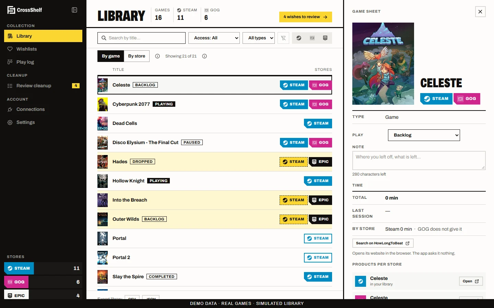
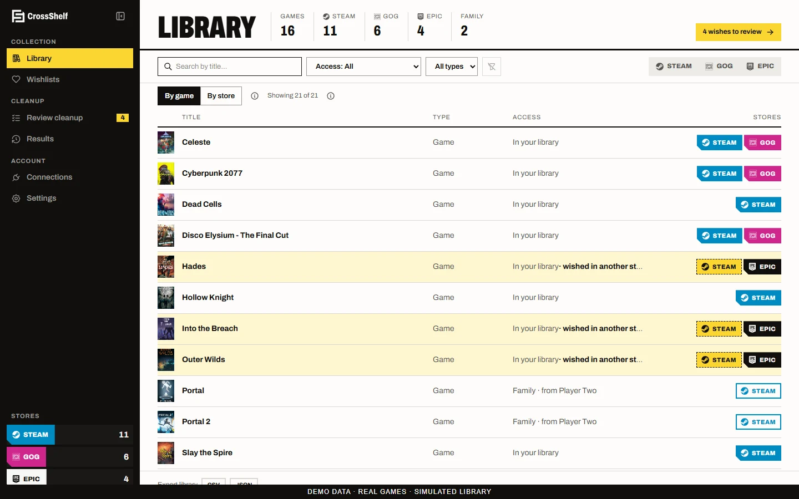
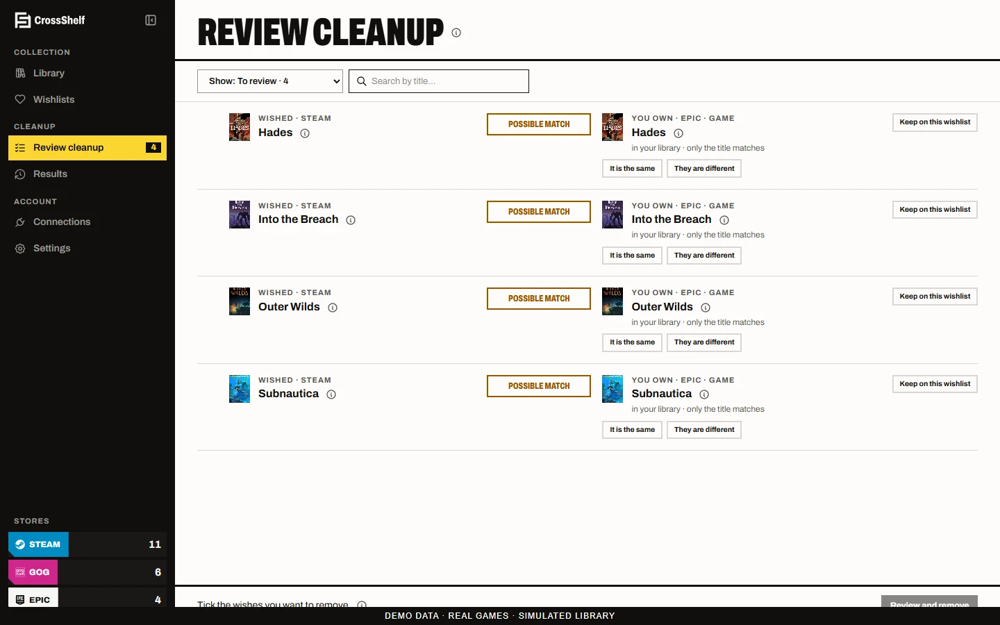

All your games. One library.
Bring your Steam, GOG and Epic libraries together. Browse your whole collection, find any game and see where you own it.
Download for Windows Latest release notesWindows 10 / 11 · 64-bit · Downloads on GitHub
Steam
GOG
Epic Games
Free & open source

Demo library: accounts, ownership and wishlists are simulated. Game artwork and trademarks belong to their respective owners. CrossShelf is not affiliated with or endorsed by the stores, developers or publishers shown.
See your whole shelf.
A game gets one row, even when you own it in more than one store. The store tabs tell you where it is yours, shared by family, or still on a wishlist.
Owned
Family access
Wishlisted

Your wishlist. Your call.
A similar title is a reason to look closer. Check the game, edition and platform side by side, then mark only the wishes you want to remove.
Nothing leaves a wishlist until you review and confirm the batch.

From scattered to sorted.
No API keys or terminal. Install the app and use the accounts you already have.
-
Connect your stores
Sign in on the official Steam, GOG and Epic pages. CrossShelf never asks for your password.
-
Bring in your libraries
Sync, search and filter your games. Steam family access is always labelled separately.
-
Review before removing
Choose the Steam and GOG wishes to remove, review the batch and confirm. The app checks each result.
Your shelf lives on your PC.
No CrossShelf account. No telemetry. Your library stays on your computer, and saved sessions are encrypted with Windows data protection.
Export your library and wishlists to CSV or JSON whenever you want.
Before you install.
What works with each store?
Read your Steam, GOG and Epic libraries, plus Steam family access. Read and clean Steam and GOG wishlists. For Epic wishlists, the app opens the store website; reading and removal are not available in the app.
Does family access count as owning a game?
Family access is labelled separately and excluded from cleanup by default. You can include it in Settings, where it remains a separate reason to review a wish.
What do I need to run it?
Windows 10 22H2 or Windows 11, 64-bit. The installer runs for your user without administrator permissions and downloads WebView2 if it is missing.
Why might Windows show a warning?
The installer is not signed with a publisher certificate, so Windows SmartScreen may warn on first run. If you downloaded it from this project’s GitHub release, choose “More info”, then “Run anyway”.
Is CrossShelf free?
Yes. CrossShelf is free and open source under the MIT licence. It does not install or launch games, buy anything, or transfer game licences.